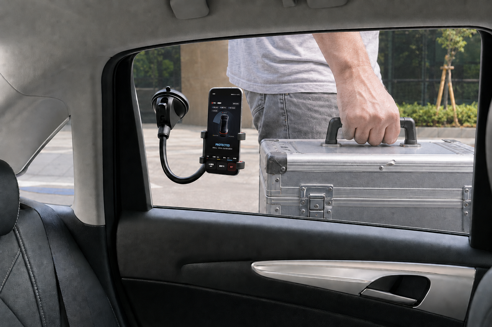
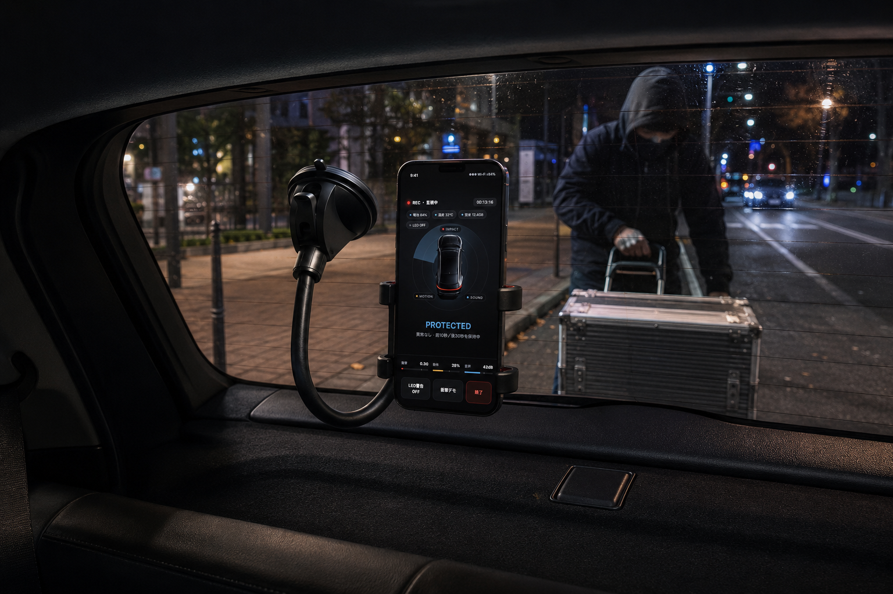
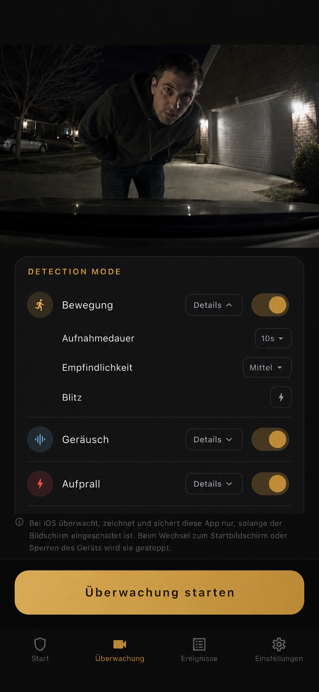

Bewegungserkennung
Überwacht das Kamerabild auf menschliche Bewegung und nutzt Verarbeitung auf dem Gerät, um relevante Veränderungen in der Szene zu erkennen.
Verwandle ein ungenutztes iPhone in ein Gerät, das Beweise bei Parkremplern, Türdellen, Vandalismus und Aufbruchversuchen sichert.
Überwacht dein Auto auf Restaurantparkplätzen, auf Parkplätzen von Einkaufszentren und Wohnanlagen, in Einfahrten und am Straßenrand.
Beweise sichern
Parking Guard nutzt ein Smartphone, das du nicht mehr täglich brauchst, um brauchbare Clips und Standbilder rund um den Vorfall zu sichern. So kannst du prüfen, was passiert ist, und entscheiden, was du mit Versicherung, Hausverwaltung oder Behörden teilst.


So funktioniert es
Armaturenbrett, Windschutzscheibe oder Innenraumhalterung können den Bereich erfassen, in dem Türdellen, Parkrempler und Vandalismus am wahrscheinlichsten sind.
Wähle Bewegung, Ton, Erschütterung oder eine Kombination daraus. Jeder Erkennungsmodus hat drei Empfindlichkeitsstufen. Um Akku zu sparen, kannst du die Kameraansicht ausschalten oder den gesamten Bildschirm abdunkeln.
Bei einer Erkennung speichert Parking Guard ein Standbild des Moments und startet das Video 3 Sekunden vor dem Ereignis. Die Aufnahme nach der Erkennung kann auf 10, 20 oder 30 Sekunden eingestellt werden.
Ereignisse bleiben offline verfügbar. Speichere Bild oder Video in Fotos, nutze optional Google-Drive-Backup oder erhalte Gmail-Benachrichtigungen.

Erkennung
Parkplätze sind unberechenbar. Eine nützliche Parkkamera-App sollte auf mehr als ein Signal reagieren. Deshalb kannst du Bewegung, Ton und Erschütterung in Parking Guard separat einstellen. Auf Wunsch kann Parking Guard im Moment der Erkennung eine Benachrichtigung an deine Gmail-Adresse senden.
Überwacht das Kamerabild auf menschliche Bewegung und nutzt Verarbeitung auf dem Gerät, um relevante Veränderungen in der Szene zu erkennen.
Nutzt das Mikrofon des Smartphones für laute Kontakt- oder Unfallgeräusche ebenso wie für leisere Geräusche wie Stimmen oder Gespräche.
Nutzt die Bewegungssensoren des Smartphones, um Stöße, Rucke oder Kontakt zu erfassen. Wenn du die App wie eine Dashcam nutzt, kannst du die Empfindlichkeit auf niedrig stellen, damit normale Fahrvibrationen seltener auslösen.
Wenn ein ausgewählter Erkennungsmodus auslöst, kann Parking Guard das Smartphone-Blitzlicht mit maximaler Helligkeit blinken lassen. Du entscheidest, welche Erkennungsmodi den Blitz auslösen dürfen.
Datenschutz von Anfang an
Parking Guard ist auf lokale Beweisspeicherung ausgelegt und kann daher offline genutzt werden. Parkvideos können auf deinem Smartphone gespeichert oder automatisch in Google Drive gesichert werden. Nirgendwo sonst werden sie gesendet.
Klare Grenzen
Eine vertrauenswürdige Parkbeweis-App erklärt nicht nur, was sie kann, sondern auch ihre Grenzen.
Aufgrund der iOS-Regeln funktioniert die Überwachung auf dem iPhone nur, solange die App geöffnet bleibt. Wenn du zum Home-Bildschirm zurückkehrst oder das Display sperrst, stoppt die Überwachung.
Empfohlen ist die Nutzung beim Essen, Einkaufen, bei Erledigungen oder auf Wohnanlagen-Parkplätzen. Lange Nutzung in einem heißen Auto im Sommer wird nicht empfohlen.
Auf Geräten mit wenig Arbeitsspeicher (2 GB oder weniger) reduziert Parking Guard automatisch die Aufnahmelast, etwa durch kürzere Vorlaufaufnahme und Standardqualität.
FAQ
Kurze Antworten für Fahrer, die Parking Guard mit Dashcam-Parkmodus, Smartphone-Kamera-Apps und allgemeinen Auto-Sicherheits-Apps vergleichen.
Nein. Parking Guard konzentriert sich auf Beweise rund um geparkte Autos mit einem zusätzlichen Smartphone. Für Daueraufzeichnung während der Fahrt oder über Nacht kann eine spezielle Dashcam weiterhin besser geeignet sein.
Für Parkrempler, Türdellen, Vandalismus, verdächtigen Kontakt und Aufbruchversuche, bei denen ein Videoclip oder Standbild helfen kann, den Ablauf zu klären.
Ja. Beweise werden zuerst lokal gespeichert. Internet wird nur für optionales Google-Drive-Backup oder Gmail-Benachrichtigung benötigt.
Parking Guard unterstützt Englisch, Deutsch, Spanisch und Japanisch.
Preis
Parking Guard kann für €7.99 pro Monat genutzt werden.